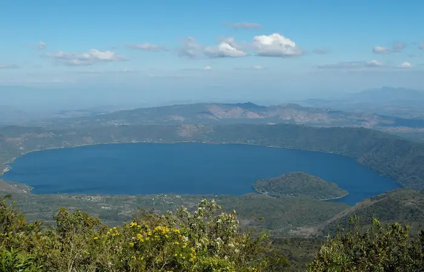

Discover El Salvador
Beaches, volcanoes, lakes, and Maya history, all in one small country that is easy to explore.
Explore Destinations
Beaches, volcanoes, lakes, and Maya history, all in one small country that is easy to explore.
Explore Destinations